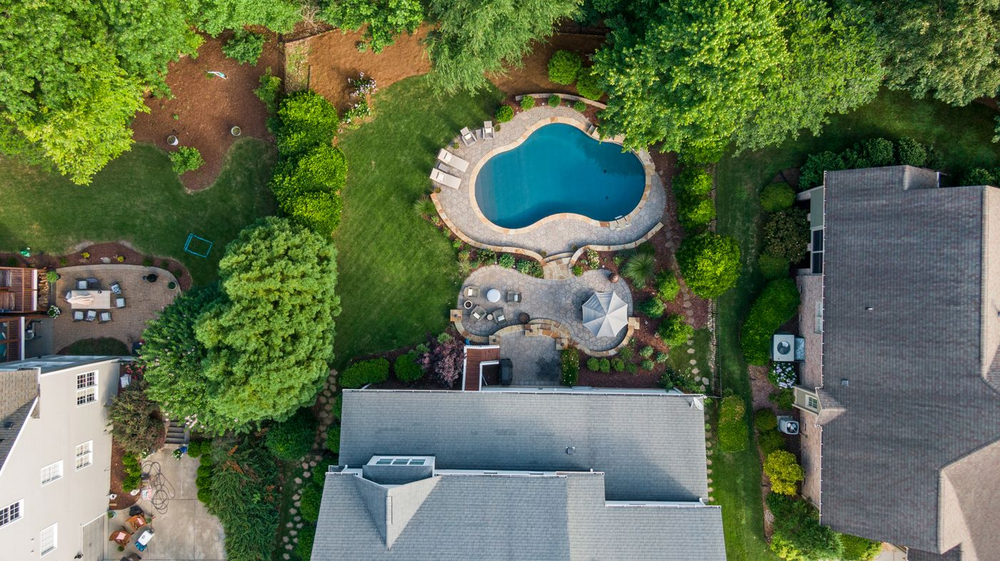
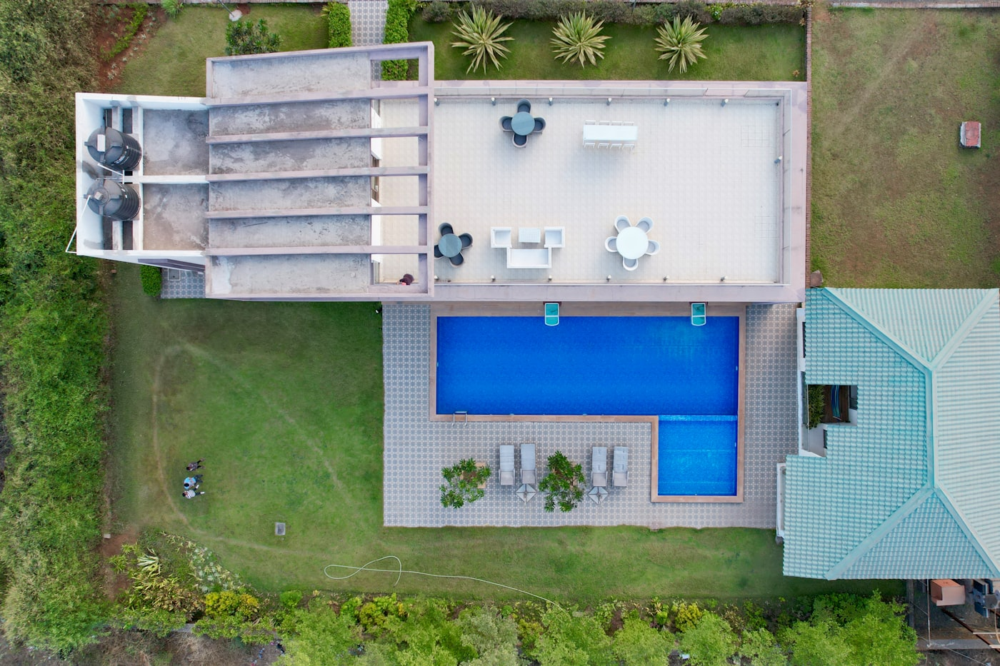
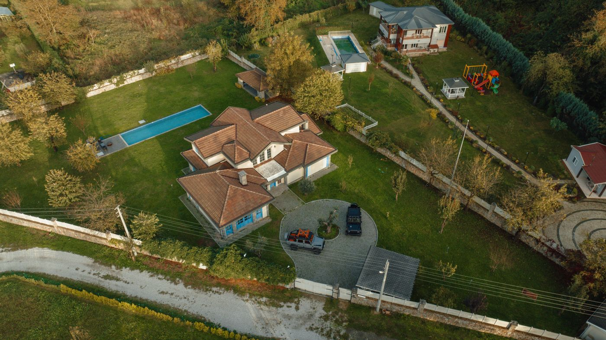
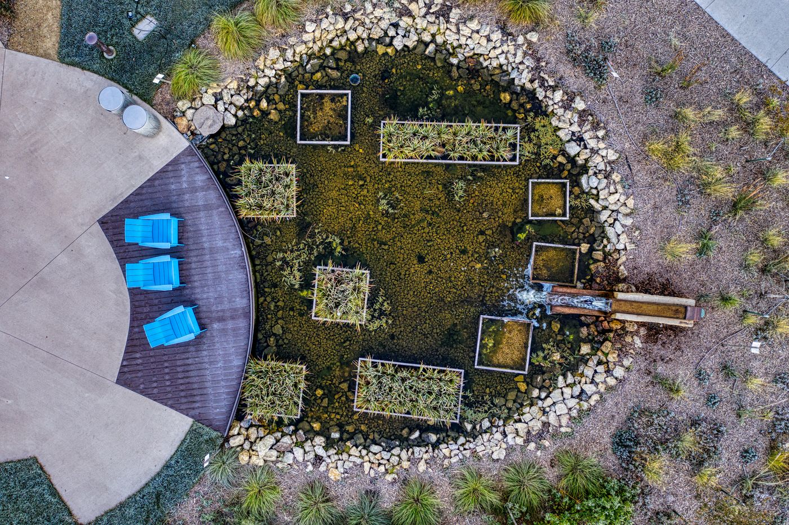
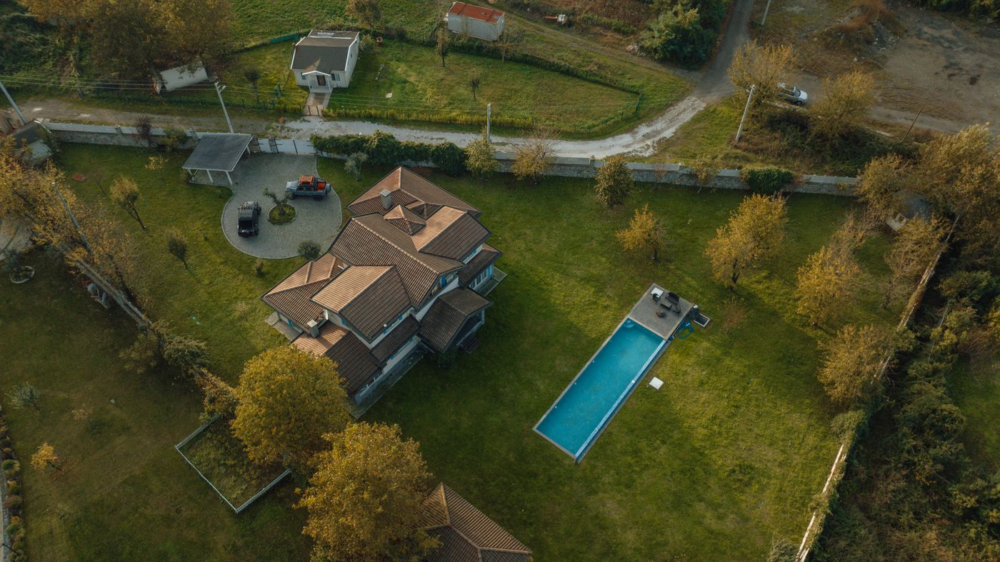
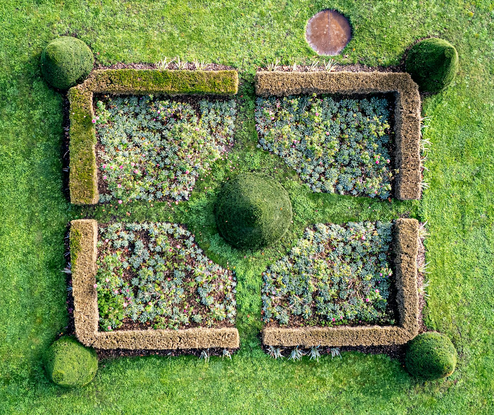
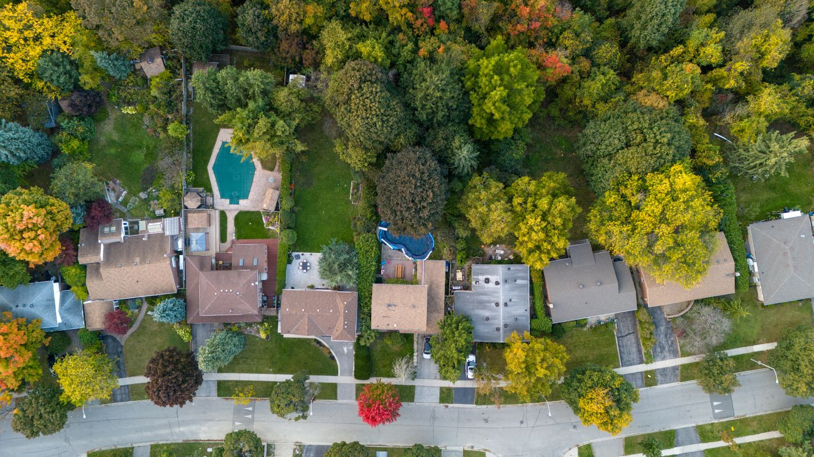

Landscaping aerial — pick one
Fresh set, everything I found, all free to use. The tool needs a true top-down view to draw on. Tell me the number and I'll set it as the base, then you trace the patio, fire pit, and bed.

1Best real patioTop-down. House, real paver patio + fire-pit circle, garden beds, pool. Clearest patio to trace.

2Modern villaTop-down. Big house, pool, large tiled patio, lawn, palms. No flower bed, upscale/estate feel.

3Autumn yardTop-down. House, pool, round paver seating, beds. Muted fall tones.

4Water gardenTop-down. Round patio with a koi pond, planters, chairs. Artsy, no house.

5Simple pool yardTop-down. House, long pool, big lawn. Not much patio or bed to trace.

6Formal bedsTop-down. A tidy raised-bed garden with boxwoods. Nice beds, but no patio or house.

7Leafy lotTop-down. Small pool, greenery, a few structures. Busy / cluttered.